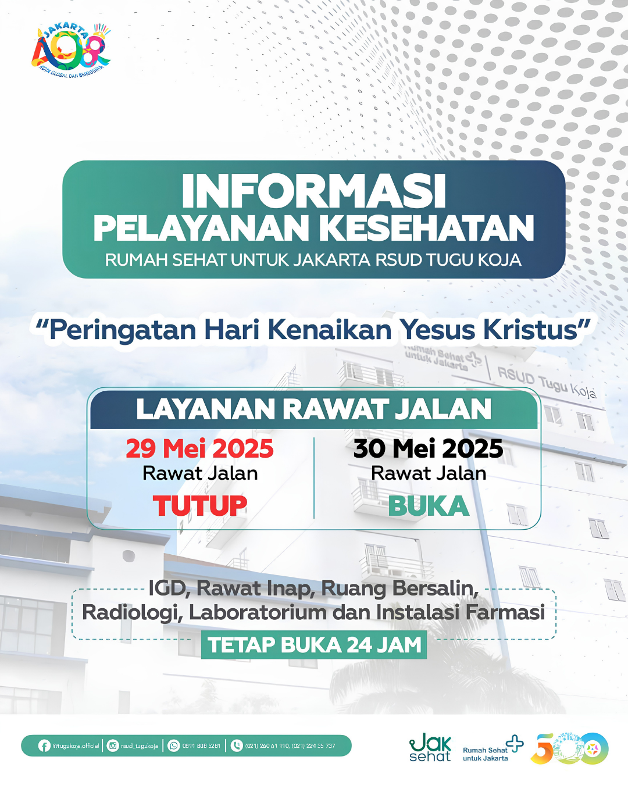

Standar Operasional Prosedur
Dokumentasi resmi tata laksana pelayanan kesehatan di RSUD Tugu Koja untuk menjamin kepatuhan mutu dan keselamatan pasien.
Nama Prosedur
Aksi
SOP Alur Pelayanan Operasi Elektif
SOP Alur Penerimaan Pasien Baru Ruang ICU
SOP Alur Penerimaan Pasien Baru Ruang Perinatologi
SOP Alur Pengadaan Barang dan Jasa
SOP Alur Perawatan Pasien di Ruang Bersalin
SOP Alur Perawatan Pasien Rawat Inap
SOP Alur Rawat Jalan Pasien BPJS
SOP Alur Rawat Jalan Pasien Umum
SOP Code Red (Keadaan Darurat Kebakaran)
SOP Pelayanan MCU (Medical Check Up)
SOP Penanganan Gempa Bumi
SOP Penanganan Pasien Gawat Darurat
SOP Penanganan Pasien PONEK